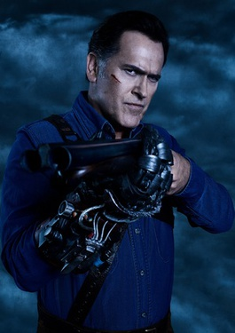
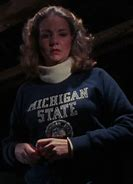

Ashley J. Williams
Ashley Joanna "Ash" Williams is a fictional character and the protagonist of the Evil Dead franchise. Created by Sam Raimi, he is portrayed by Bruce Campbell and is the only character to appear in each entry of the series, including a post-credits and audio cameo in the 2013 and 2023 soft reboot films. Throughout the series, Ash faces off against "Deadites", evil creatures possessed by the ancient evil of the Kandarian Demon. Ash, since his debut, has been considered a cultural icon and an iconic horror hero. In 2008, Ash was selected by Empire magazine as the 24th greatest movie character of all time, and in 2013, was voted by Empire as the greatest horror movie character ever.
Linda
Linda is Ash's girlfriend throughout the series. She is very much in love with Ash and keeps a necklace he gave her close to her at all times.
In the first film, Evil Cheryl stabs her in the ankle with a pencil and is unable to be moved out of the cabin. After Scotty leaves, Linda becomes possessed and taunts Ash until she is dragged outside of the cabin and returns to attack Ash. After a struggle, Ash buries her outside and places a crude cross at her grave only to have her burst from the ground and tear at his leg. Once entirely free from the grave she runs at Ash who swings his shovel and takes off her head.
In the second film, Linda is shown in the re-cap of the first film at the beginning of this film. In this version she dies the same way (decapitation), however, she rises yet again. Once Ash returns to the cabin she escapes from her grave and dances headless outside the cabin. Ash watches as her head rolls along the ground and up her body to rest on her neck, unmoving. Linda then reaches out to Ash and drops her head in his lap. She bites hard into Ash's hand and he can only remove her by crushing her head in a vise and roughly tearing his hand away. Ash is then attacked by the body of Linda, who is now wielding a chainsaw, he manages to get the upper hand and Linda is killed once again; first her body, then her head. In the third film, Linda is shown in Ash's flashback as he is being dragged through the sand by Arthur's men. Linda is attacked by the evil through a window in this version, much like Shelly was in the first film.
In the TV series, Linda's head makes an appearance in the episode Ashes to Ashes.
Linda is the only character to appear (or even be mentioned) in all three films and also the only character who did not originally appear in Within the Woods. She is played by four different actresses, In the first film, she is played by Betsy Baker, in the second by Denise Bixler, in the third by Bridget Fonda and in the TV series by Rebekkah Farrell.